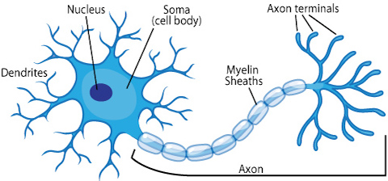
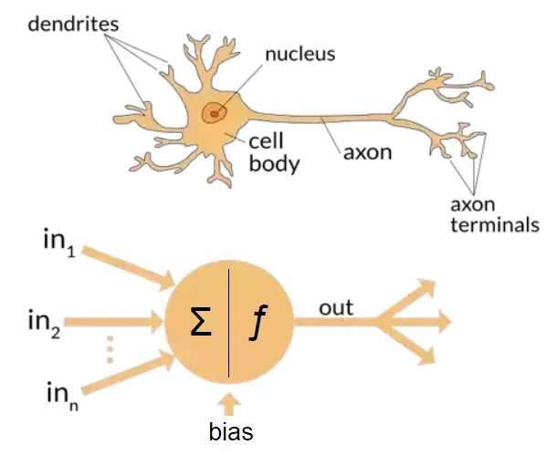
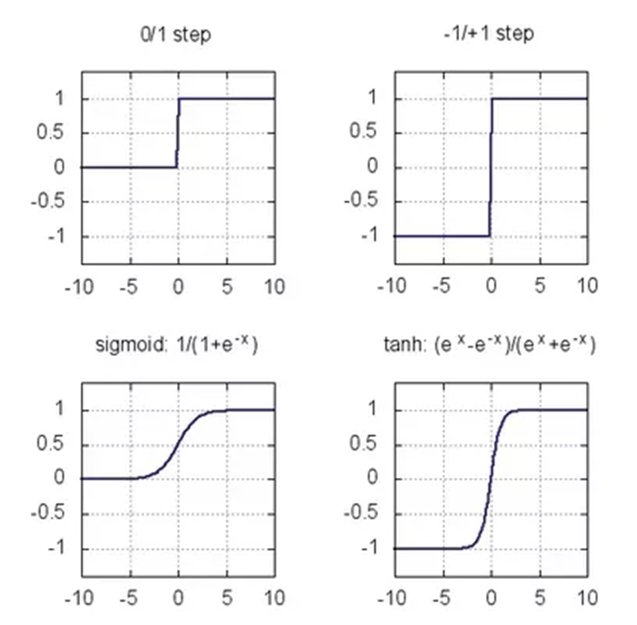
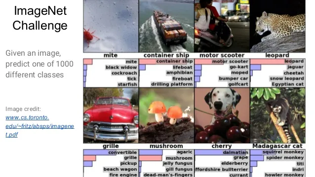

AI - Artificial Intelligence
Machine Learning
| Human | Rational | |
|---|---|---|
| Think | The exciting new effort to make computers think… (Haugeland 1985) | The study of computations that make it possible to perceive, reason and act (Winston 1992) |
| Act | The study of how to make computers do things at which at the moment people are better (Rich & Knight 1992) | The study and construction of rational agents (Russell & Norvig 1995) |
“By distinguishing between human and rational behavior, we are not suggesting that humans are necessarily ‘irrational’… One merely need note that we are not perfect: not all chess players are grandmasters, and, unfortunately, not everyone gets an A on the exam.”


Invented by Frank Rosenblatt — originally mechanical hardware for image recognition (US Navy)
Addressing the limitations of single-layer perceptrons in solving non-linear problems.


Nuts and Bolts of AI and Machine Learning